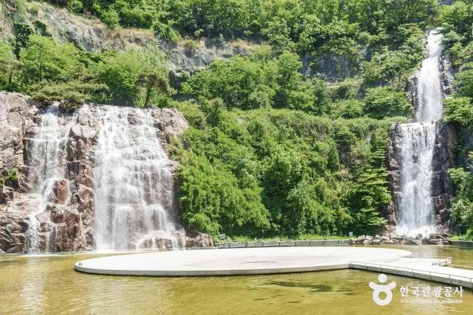
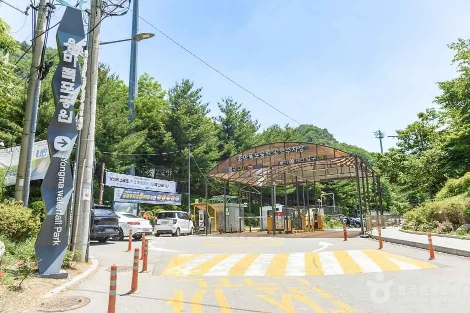
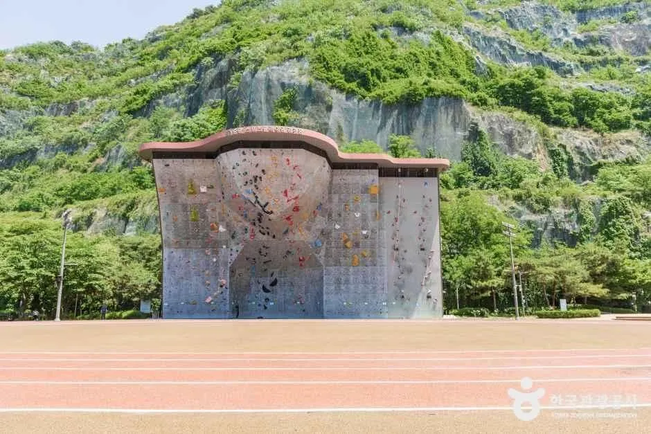
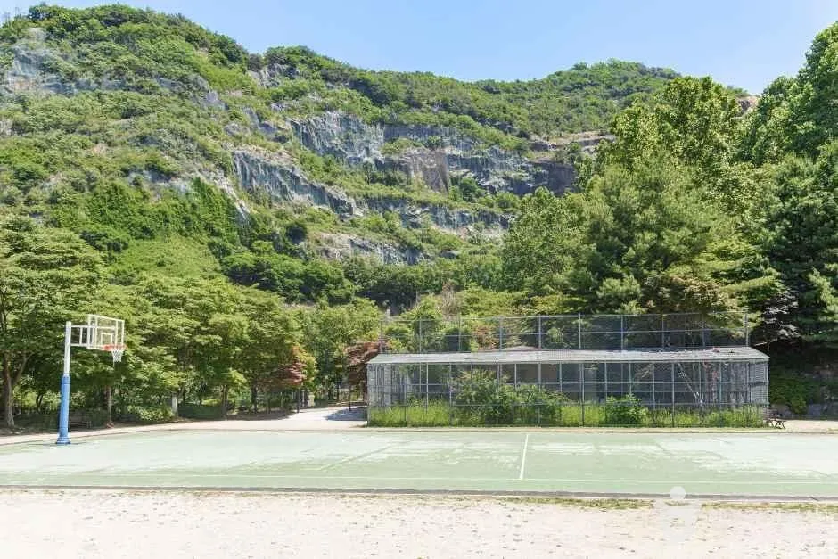
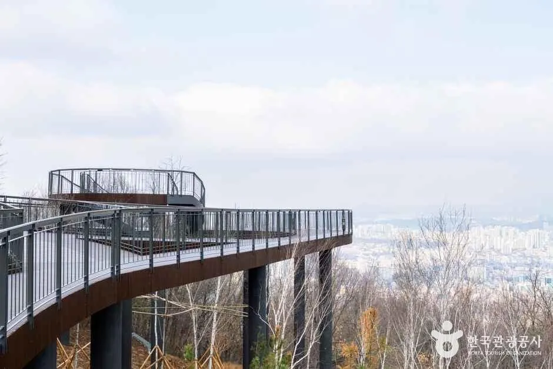
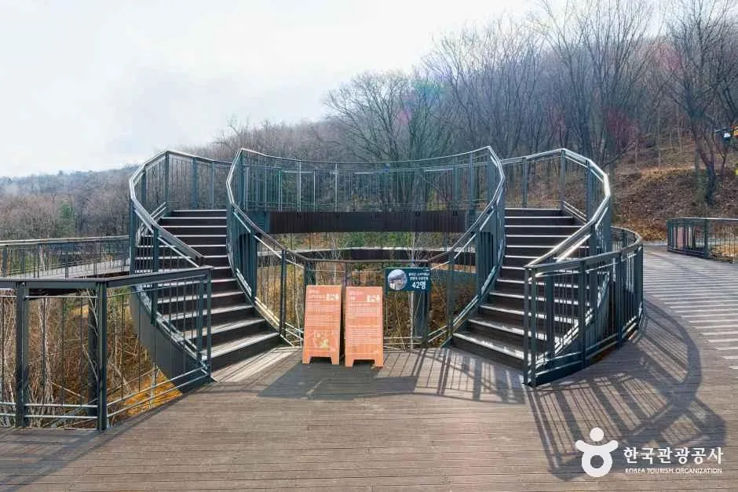
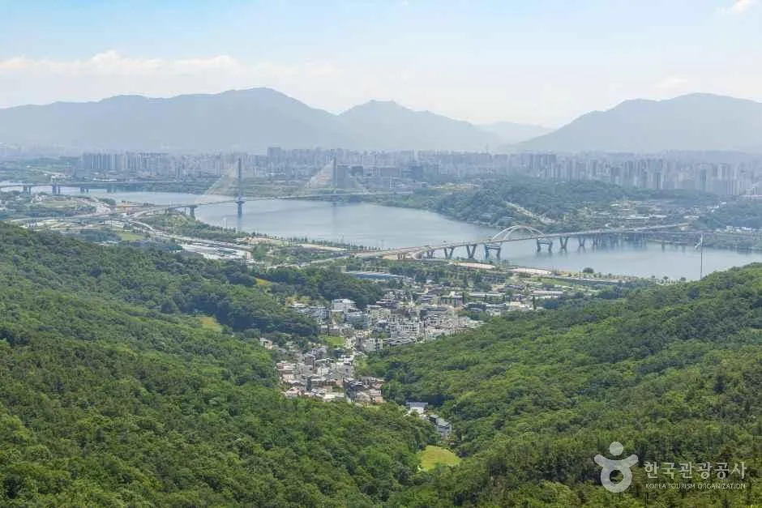
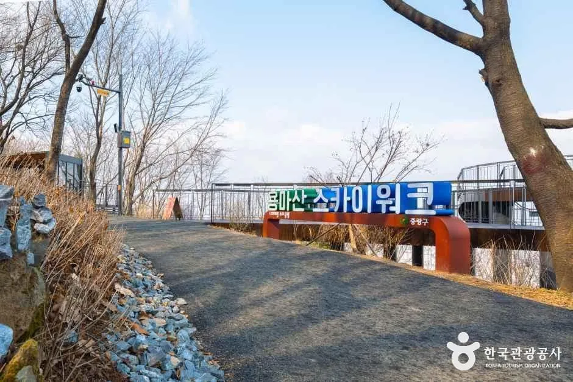
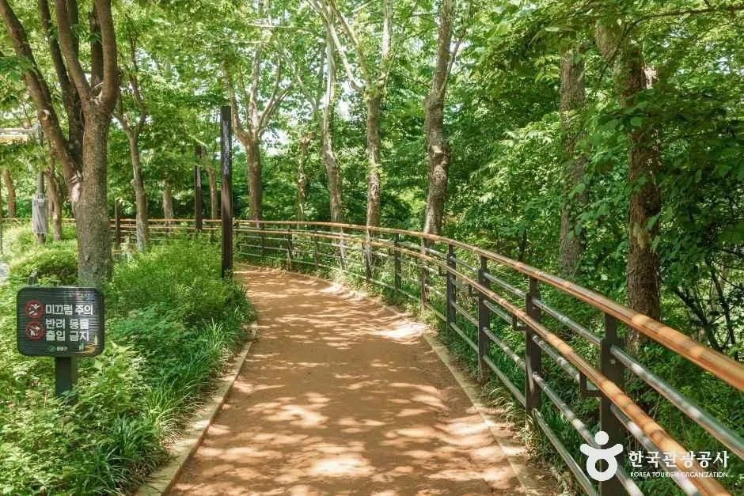
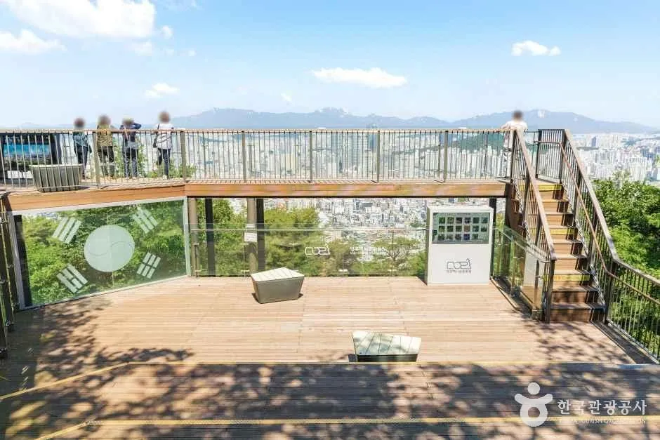

▲ 암벽 위로 세 줄기 폭포가 흐르는 용마폭포공원. 사진은 폭포 가동 시기에 촬영됐다 사진=한국관광공사
서울 중랑구 용마폭포공원에서 10월 10일(토) 하루 열리는 「2026 중랑용마폭포축제」는 규모가 크지 않은 구 단위 가을 행사다. 그런데 이름만 보고 폭포 앞 축제를 기대하면 어긋나는 대목이 있다. 서울시 공식 소개 자료상 용마폭포공원의 인공폭포 가동 기간은 매년 5월 1일~8월 31일이다. 10월 10일에 물줄기가 나오는지는 확인하지 못했다. 이 글은 확인된 축제 일정과 프로그램, 자차와 대중교통 접근법, 인근 연계 코스를 정리하고, 확인하지 못한 항목은 따로 표시했다. 축제 정보는 중랑신문 보도와 서울시 펀서울 안내를 기준으로 했다.
1. 한눈에 보기 — 하루짜리 축제, 일정부터

▲ 용마폭포공원의 폭포와 연못. 사진은 폭포 가동 시기에 촬영된 것으로, 10월 10일 가동 여부는 확인하지 못했다. 사진=한국관광공사
용마폭포문화예술축제는 2016년 시작된 행사로, 올해는 「중랑용마폭포축제」라는 이름으로 중랑문화재단이 운영한다. 관람은 무료이고 일부 체험만 유료다. 체험별 요금은 확인하지 못했다.
| 항목 | 내용 | 확인 출처 |
|---|---|---|
| 일시 | 2026년 10월 10일(토) 11:00~21:00 | 중랑신문, 펀서울 |
| 장소 | 용마폭포공원(서울 중랑구 용마산로 250-12, 면목동) | 중랑신문, 한국관광공사 |
| 관람료 | 무료(일부 체험 유료) | 중랑신문 |
| 구성 | 용마 플레이존·아트존·푸드존·스테이지 4개 구역(중랑신문 보도 기준) | 중랑신문 |
| 문의 | 중랑문화재단 축제공연팀 02-3407-6563(중랑신문·펀서울 표기, 자료에 따라 6537·6532로도 적혀 있어 대표번호 확인 권장) | 중랑신문, 펀서울 |
| 인스타그램 | @yongma_fe | 펀서울 |
| 우천 시 운영 | 확인하지 못함(10월 3일 재확인에도 공식 공지 없음) | - |
| 공연별 시간표 | 확인하지 못함(펀서울·중랑신문 모두 11~21시 총 시간만 표기) | 펀서울, 중랑신문 |
| 저녁 영화 프로그램 | 펀서울 안내에 「밤마실 영화제」가 적혀 있으나 본행사 당일 상영 여부와 시각은 확인하지 못함. 검색 요약에는 전야제(9월 26일)로 소개한 곳도 있어 이미 지난 일정일 수 있음(공식 원문 미확인) | 펀서울 |
ℹ️ 문의 번호가 자료마다 다르다
중랑신문과 펀서울은 축제공연팀 번호를 02-3407-6563으로 적었다. 자원봉사자 모집 안내문(서울여대 사이트에 게시된 사본)에는 02-3407-6537로 적혀 있었다. 검색 요약에는 02-3407-6532로 나온 사례도 있었다. 이 글은 보도·펀서울 두 곳이 일치하는 6563을 먼저 적었지만, 번호가 엇갈리므로 통화가 안 되면 중랑문화재단 대표번호로 확인하는 편이 낫다. 공원 자체 문의는 공원관리사무소 02-2094-2965, 공원녹지과 02-2094-2353이다.
2. 4개 구역 프로그램 — 무엇을 하나

▲ 용마폭포공원 입구 일대. 축제는 이 공원 안 4개 구역으로 꾸며진다. 사진=한국관광공사
축제장은 놀이·전시·먹거리·무대로 나뉜다. 보도된 내용을 구역별로 정리하면 다음과 같다. 구역별 위치 배치도와 각 공연의 시작 시각은 확인하지 못했다.
| 구역 | 주요 내용 |
|---|---|
| 용마 플레이존 | 예술장돌뱅이 「만물미술트럭」(전통시장·골목형상점에서 산 물건을 참가자가 그린 그림과 교환하는 참여형 프로그램), 풍선아트, 페이스페인팅, 전통자개 키링 만들기, 모루인형 만들기 |
| 용마 아트존 | 중랑구 문인협회·포토클럽·디카시인협회 작품 전시, 지역 아티스트 버스킹 |
| 용마 푸드존 | 중랑장미카페 팝업(장미빵·커피), 푸드트럭(닭강정·닭꼬치·분식류) |
| 용마 스테이지 | 마임 아티스트 「코튼캔디맨」 퍼포먼스, 청소년 아티스트 공연, DJ DOC·심신·마로니에 콘서트(중랑신문 보도 기준) |
메인 이벤트는 스테이지 콘서트다. 중랑신문 보도 기준으로 초청 가수 3팀(DJ DOC·심신·마로니에)이 나오지만 순서와 시작 시각은 확인하지 못했다. 서울시 펀서울 안내에는 퀴즈 대회, 서예·사진 전시, 플리마켓, 청소년 글짓기도 언급돼 있는데, 중랑신문 보도의 4개 구역 구성에는 같은 표현이 없다. 두 자료의 세부 구성이 다를 수 있으니 당일 현장 안내를 따라야 한다. 펀서울 안내에는 저녁 영화 상영(밤마실 영화제)과 에어바운스, 플리마켓도 적혀 있다. 자원봉사 모집 안내문의 활동 시간(10시 30분~16시 30분, 16시~22시)으로 미루어 철수 정리는 21시 종료 후 22시 무렵까지 이어지는 것으로 보인다(추정).

▲ 공원 안 클라이밍 경기장(높이 17m·폭 30m 규모로 소개). 행사장 동선을 가늠할 때 기준이 되는 시설이다. 촬영 시기는 초여름 무렵으로 보이며 축제 당일 모습과 다를 수 있다. 사진=한국관광공사
공식 일정 확인은 서울시 펀서울 축제 페이지에서 할 수 있다. 펀서울 중랑용마폭포축제 페이지 바로가기
3. 자차 방문 — 주차와 혼잡 대비

▲ 암벽 아래로 농구장과 체육시설이 자리한 공원 일대. 공원 안 시설은 평소에도 이용객이 많다. 사진=한국관광공사
내비게이션 목적지는 용마폭포공원(용마산로 250-12)이다. 서울시 소개 자료에 공원 안에 공영주차장이 있다는 안내는 있으나, 수용 대수와 요금표는 공식 자료에서 확인하지 못했다(서울시 미디어허브 후기에는 "큰 규모의 주차장이 있고 주말·붐비는 시간대에는 대중교통을 권한다"는 취지만 있다). 민간 여행 블로그에는 요금이 5분당 100원이고 24시간 운영한다는 내용이 있는데, 이는 공식 확인이 아니므로 현장 요금표를 따라야 한다. 축제 당일 임시 주차 통제나 주차장 운영 변경이 있는지도 확인하지 못했다.
| 항목 | 내용 | 확인 상태 |
|---|---|---|
| 내비 목적지 | 용마폭포공원, 서울 중랑구 용마산로 250-12 | 한국관광공사 TourAPI |
| 주차장 | 공원 내 공영주차장 있음 | 서울시 소개 자료 |
| 수용 대수 | 확인하지 못함(서울시 후기에 "큰 규모"라는 표현만 있음) | 서울시 미디어허브 |
| 요금 | 민간 블로그 기준 5분당 100원, 24시간 운영(공식 미확인) | 블로그, 현장 확인 필요 |
| 축제 당일 주차 통제·임시 주차 | 확인하지 못함 | - |
| 혼잡 예상 | 콘서트가 있는 하루 행사라 낮 이후 만차 가능성(추정) | 공식 발표 없음 |
✅ 자차 방문자 요령
· 축제는 11시에 시작한다. 주차장 여유를 기대한다면 오전에 도착하는 편이 낫다(혼잡 시간대는 공식 발표 없음)
· 저녁 DJ DOC·심신·마로니에 콘서트는 시작 시각을 확인하지 못했다. 공연이 끝난 뒤 한꺼번에 출차하는 상황을 감안해 여유를 두는 편이 낫다(추정)
· 공원 앞 도로 통제 여부는 확인하지 못했다. 현장에서 진행요원 안내를 따른다
· 주차가 걱정되면 아래 4번 항목의 7호선 이용을 우선 고려한다
4. 대중교통 — 지하철이 현실적인 이유
서울시 소개 자료에 따르면 용마폭포공원은 지하철 7호선 용마산역 2번 출구에서 안내 표지를 따라 도보 5~6분 거리다. 일부 블로그에는 10분 안팎으로 적혀 있어 걷는 속도에 따라 차이가 날 수 있다. 버스는 320번, 2012번, 2227번이 공원 일대에 선다는 정보가 있으나 이는 민간 자료이므로 앱으로 확인하는 편이 낫다.
| 수단 | 내용 | 확인 출처 |
|---|---|---|
| 지하철 | 7호선 용마산역 2번 출구, 도보 약 5~6분 | 서울시 미디어허브 |
| 버스 | 320번, 2012번, 2227번 정차(민간 자료) | 나무위키 등, 앱 확인 필요 |
| 축제 임시 셔틀 | 확인하지 못함 | - |
| 수단 | 목적지·정류장 | 확인된 소요·비용 | 유의점 |
|---|---|---|---|
| 지하철 | 7호선 용마산역 2번 출구 | 도보 5~6분(서울시 자료에 따라 5분 또는 6분 표기) | 축제 종료 후 역 일대 혼잡은 공식 발표 없음(추정) |
| 자차 | 용마폭포공원, 용마산로 250-12 | 공원 내 주차장 있음, 요금·수용 대수는 미확인 | 축제 당일 통제·임시 주차 미확인, 주말 붐비는 시간대는 대중교통 권장(서울시 후기) |
| 버스 | 320번, 2012번, 2227번 정차 정보(민간 자료) | 정류장·배차 확인하지 못함(10월 3일 재검색에도 공식 자료 없음) | 서울 버스 앱으로 실시간 확인 |
| 임시 셔틀 | - | 확인하지 못함 | - |
자차로 올 사람도 주차장이 만차일 때를 대비해 근처 지하철역을 한 번 확인해 두면 도움이 된다. 용마산역 인근 공영주차장에 대해서는 확인한 자료가 없다.
5. 폭포는 나올까 — 공원의 기본 정보
한국관광공사 자료에 따르면 공원은 골재 채취장이던 용마산 암절벽에 인공폭포와 공원을 조성한 곳이다. 중앙의 용마폭포(51.4m, 2단)와 좌측 청룡폭포(21m), 우측 백마폭포(21.4m) 세 줄기로 이뤄진다. 서울시 소개 자료의 폭포 가동 기간은 5월 1일~8월 31일이다. 한 민간 자료는 5~9월로 적어 차이가 있으나, 두 자료 모두 10월 10일이 가동 기간에 포함된다고 보기는 어렵다. 다만 행사 당일 특별 가동 여부는 확인하지 못했다. 폭포 정보가 필요하면 중랑구청이나 축제 문의처에 사전에 확인하는 편이 낫다.
| 항목 | 내용 |
|---|---|
| 면적 | 167,172㎡ |
| 폭포 규모 | 용마폭포 51.4m, 청룡폭포 21m, 백마폭포 21.4m |
| 폭포 가동 기간(서울시 자료) | 5월 1일~8월 31일, 우천 시 중단 |
| 시설 | 클라이밍 경기장(높이 17m·폭 30m), 축구장, 농구장, 족구장, 어린이 놀이터, 운동기구 |
| 입장료 | 무료, 공원 24시간 개방 |
| 구분 | 기간 | 가동 시간 |
|---|---|---|
| 일반기간 | 5월 1일~6월 28일 | 11:30~13:00, 14:00~15:00 |
| 집중기간 | 6월 29일~8월 31일 | 11:30~13:00, 14:00~15:00, 17:00~18:00 |
| 10월 10일 | 가동 기간 밖 | 특별 가동 공지는 확인하지 못함 |
기상 상황과 시설 점검에 따라 시간이 바뀔 수 있다고 안내돼 있다. 폭포는 하루 종일 흐르는 것이 아니라 정해진 시간에만 가동하는 구조라는 점도 알아 둘 만하다.
축제 날 폭포 연출을 기대하기보다, 암벽과 숲으로 둘러싸인 공원 지형 자체를 즐기는 쪽으로 계획을 잡는 편이 맞다.
6. 연계 코스 — 용마산 스카이워크

▲ 2025년 11월 문을 연 용마산 스카이워크. 길이 약 160m 목재 데크 전망대다. 촬영 시기는 가을과 다를 수 있다. 사진=한국관광공사
축제 전후로 시간이 남으면 용마산 스카이워크가 후보다. 한국관광공사 자료에 따르면 서울둘레길 2.0 사업의 첫 결실로 2025년 11월 조성됐고, 길이 약 160m, 최대 높이 10m의 목재 데크 산책로다. 경사 완화형 데크라 휠체어와 유아차도 오를 수 있다고 소개한다. 예전 안내에는 오전 9시~오후 5시, 야간 이용 제한이라는 문구가 있었으나 낡았을 가능성이 크다. 서울시 미디어허브는 야간 조명과 미끄럼 방지 덮개를 갖춘 무장애 데크로 소개하며 야경 명소로 다루고, 한국관광공사 계열 요약은 연중무휴 상시 개방으로 적는다. 다만 구체적인 소등 시각은 확인하지 못했고 중랑구청 문의 번호(02-2094-2382)도 검색 요약상 일치만 확인했을 뿐 구청 원문 대조는 하지 못했다. 야간 조명 운영 기사가 있어도 가을 해가 짧고 산길 접근이 길므로 시간 계획은 여유 있게 잡는 편이 낫다.

▲ 스카이워크의 하트형 쌍계단 전망 구조물. 촬영 시기는 가을과 다를 수 있다. 사진=한국관광공사
| 항목 | 내용 | 확인 출처 |
|---|---|---|
| 위치(TourAPI) | 서울 중랑구 면목동 산1-3 | 한국관광공사 |
| 위치(서울시 안내) | 광진구 중곡동 용마산으로 표기 | 출처 간 표기 차이, 행정구역 경계 인근으로 추정 |
| 접근 경로(서울시 안내) | 7호선 사가정역에서 도보 약 50분(약 2.4km). 사가정역 4번 출구에서 사가정공원 거쳐 아토피치유의 숲 방향 데크길 | 서울시 미디어허브 |
| 용마산역에서 | 도보 약 1시간 30분으로 소개 | 서울시 미디어허브 |
| 용마폭포공원에서 가는 길 | 확인하지 못함 | - |
| 주차 | 스카이워크 자체 주차 정보는 확인하지 못함 | - |
| 운영시간 | 상시 개방·연중무휴로 알려짐, 야간 조명 있음(구 안내의 9~17시는 낡았을 가능성). 소등 시각은 미확인, 문의 02-2094-2382 | 서울시 미디어허브, 한국관광공사 요약 |

▲ 용마산에서 내려다본 한강과 서울 동북권 전경. 사진=한국관광공사

▲ 용마산 스카이워크 입구 표지 일대. 앞쪽 나무 잎이 거의 없는 모습으로 보아 늦겨울~초봄 촬영으로 추정되며, 10월 모습과 다를 수 있다. 사진=한국관광공사
| 구간 | 소요·거리 | 비고 |
|---|---|---|
| 용마산역 → 용마폭포공원 | 도보 5~6분 | 축제장 접근 |
| 사가정역 → 용마산 스카이워크 | 도보 약 50분, 약 2.4km | 사가정공원 경유 |
| 용마산역 → 용마산 스카이워크 | 도보 약 1시간 30분 | 서울시 미디어허브 소개 |
| 용마폭포공원 → 용마산 정상 | 약 1시간 | 서울시 소개 자료, 스카이워크까지의 시간은 아님 |
| 용마폭포공원 → 스카이워크 | 확인하지 못함 | - |
| 사가정공원·망우산 구간 | 확인하지 못함 | TourAPI에는 등록, 소요시간은 공식 확인 불가 |
용마산은 한국관광공사에 중랑구 면목동 산으로 등재돼 있고, 서울시 소개 자료는 공원에서 정상까지 약 1시간 거리의 등산로가 이어진다고 설명한다. 축제 하루에 스카이워크까지 오르는 일정은 걷는 시간이 길어 짧은 방문에는 부담이 클 수 있다. 사가정공원(사가정로72길 47)과 망우산(중랑구 망우동)도 TourAPI에 등록돼 있으나, 이번 축제와 묶는 최적 동선은 확인하지 못했다. 자차라면 한 곳에 차를 세우고 도보나 대중교통으로 이어 가는 편이 낫다.

▲ 용마산 일대의 숲길 데크. 잎이 무성한 여름 무렵 촬영으로 보이며, 가을 단풍 시기와는 다를 수 있다. 사진=한국관광공사

▲ 한국관광공사에 망우산(서울)으로 등록된 사진의 전망 데크. 축제장에서 도보로 이어지는 코스인지는 확인하지 못했다. 촬영 시기는 이른 봄으로 추정. 사진=한국관광공사
함께 읽을 글: 축제장 주차의 함정은 축제장 주차 가이드, 같은 서울 가을 행사의 자차 대비는 가을 궁중문화축전 주차 가이드에서 볼 수 있다.
✅ 출발 전 체크리스트
· 일시: 10월 10일(토) 11:00~21:00, 용마폭포공원(용마산로 250-12)
· 관람 무료, 일부 체험 유료(요금 미확인)
· 콘서트(DJ DOC·심신·마로니에, 중랑신문 보도 기준) 시각, 우천 시 운영, 주차 통제 여부는 문의처에 확인(02-3407-6563 표기, 6537·6532로 적힌 자료도 있어 대표번호 확인)
· 지하철: 7호선 용마산역 2번 출구 도보 5~6분
· 폭포 가동 기간은 5~8월이 공식 안내, 축제 당일 가동 여부는 미확인
· 폭포는 5~8월 정해진 시간(11:30~13:00 등)에만 가동, 10월 가동 공지 없음
· 스카이워크는 상시 개방으로 알려졌으나 소등 시각은 중랑구청(02-2094-2382)에 확인하고, 가을 일몰 시각을 고려해 이동
7. 요약
2026 중랑용마폭포축제는 10월 10일(토) 11:00~21:00 용마폭포공원에서 열리는 하루짜리 무료 축제로, 플레이·아트·푸드·스테이지 4개 구역과 DJ DOC·심신·마로니에 콘서트가 중심이다. 서울시 자료상 인공폭포 가동 기간은 5월 1일~8월 31일이므로 축제 날 폭포 연출은 기대하지 않는 편이 안전하다.
자차는 공원 내 공영주차장을 쓸 수 있지만 수용 대수와 축제 당일 운영 방식은 확인하지 못했고, 7호선 용마산역 2번 출구에서 도보 5~6분이라 지하철이 현실적인 선택지다. 연계 코스로는 용마산 스카이워크가 있으나 공원에서 가는 경로는 확인하지 못했다. 공연 시간표, 체험 요금, 우천 시 운영, 주차 통제 여부는 중랑문화재단에 확인해야 한다.